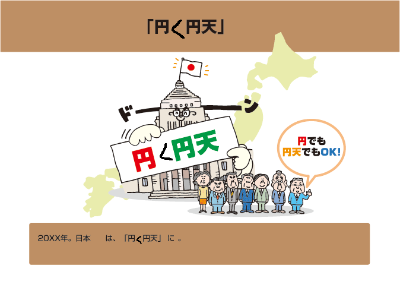

円天
Yenten is a cryptocurrency of the cpu, by the cpu, for the cpu.
No ASIC. ASIC is for girls and kids.
Abstruct
Yenten is made for reducing MEGA WASTE of electricity by ASIC on the earth.When this cryptocurrency spreads, reduction of CO2 emission would be realize by Yenten.

| Algorithm: | YescryptR16 (GPU is slower than CPU) | |
| Block time: | 2.0 minutes | |
| Max Block size: | 2M | |
| Block reward of block #1: | 50 YTN | |
| Total YTN setting: | 84,000,000 YTN | |
| Calculated max YTN: | about 80,000,000 YTN | |
| SubsidyHalvingInterval: | 800,000 blocks | |
| Difficulty re-target: | every block (DarkGravityWave v3-1) | |
| Premine: | none | |
| P2P Port: | 9981 | |
| RPC Port: | 9982 |
Roadmap
| 2017: | CPU mining, exchange, etc... | |
| 2018: | CPU mining, exchange, etc... | |
| 2019: | CPU mining, exchange, etc... | |
| 20XX: | 1Yen < 1Yenten. |
FAQ
もちろん俺らは払うで。🤜💥🤛| Q: | どう払うん？ | |
| A: | 円天で！💪 |
Of cource, we resist to ASIC...🤜💥🤛
| Q: | ...How??? | |
| A: | By Yenten!!!💪 |
Download
v1.3.1Binary Source
Pool
You can make your pool by customizing CoiniumServ on Windows, YIIMP on Linux, etc.search existing pools
Block Explorer
Yenten block explorer.Exchange
CoinsMarkets
Stocks.exchange

ICQBASE(YTN/BTC)
ICQBASE(YTN/LTC)
CREX24

OpenTrade(YTN/MC)

GRAVIEX

BitcoinTalk Forum
cpuminer-opt for mining